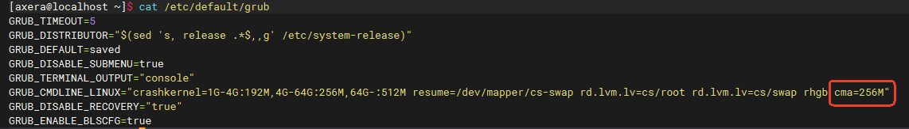

5. AXCL 安装#
5.1. Raspberry Pi 5#
5.1.1. 准备工作#
在树莓派 5 上安装 AX650 加速卡时，首先需要准备一块 M.2 HAT+ 扩展板。参考官方链接，M.2 HAT+ 的官方版本只支持 2230、2242 的 M.2 M Key 卡，通常 AX650 加速卡是 2280 的，您可能需要考虑购买第三方的支持 2280 长度的 M.2 HAT+ 扩展板。
Warning
根据树莓派硬件批次不同，可能需要更新一下树莓派的 EEPROM 设置。具体步骤如下：
如同 PC 中的 BIOS，EEPROM 设置独立于烧录 OS 的 TF 卡，烧录最新的树莓派镜像或者切换镜像版本并不会主动更新 EEPROM 的设置。首先执行 update：
sudo apt update && sudo apt full-upgrade
然后检查一下 EEPROM 中的版本：
sudo rpi-eeprom-update
如果看到的日期早于 2023 年 12 月 6 日，运行以下命令以打开 Raspberry Pi 配置 CLI：
sudo raspi-config
在 Advanced Options > Bootloader Version （引导加载程序版本） 下，选择 Latest （最新）。然后，使用 Finish 或 ESC 键退出 raspi-config。
执行以下命令，将固件更新到最新版本。
sudo rpi-eeprom-update -a
最后使用 sudo reboot 重新启动。重启后就完成了 EEPROM 中 firmware 的更新。
Warning
取决于使用的树莓派 kernel 状态，目前的修改是以 2024年11月18日 以前的树莓派刚烧录好的系统为例进行说明的，客户需要根据树莓派系统更新情况识别这个步骤是否必须。
在当前的树莓派 kernel 和 M.2 HAT+ 组合中，可能会遇到如下限制：
PCIE Device 无法识别
PCIE MSI IRQ 无法申请多个
这些问题将导致安装失败或者子卡起不来。需要检查 Raspberry Pi 5 /boot/firmware/config.txt 文件，并进行修改。
如果是第三方的兼容 M.2 HAT+ 产品，需要注意供电问题；在 config.txt 中添加如下描述：
dtparam=pciex1
该描述可以默认打开 PCIE 功能；然后继续增加 PCIE 的设备描述：
dtoverlay=pciex1-compat-pi5,no-mip
完成修改并重启后，可以使用 lspci 命令检查加速卡是否正确被识别：
axera@raspberrypi:~ $ lspci
0000:00:00.0 PCI bridge: Broadcom Inc. and subsidiaries BCM2712 PCIe Bridge (rev 21)
0000:01:00.0 Multimedia video controller: Axera Semiconductor Co., Ltd Device 0650 (rev 01)
0001:00:00.0 PCI bridge: Broadcom Inc. and subsidiaries BCM2712 PCIe Bridge (rev 21)
0001:01:00.0 Ethernet controller: Raspberry Pi Ltd RP1 PCIe 2.0 South Bridge
其中 Multimedia video controller: Axera Semiconductor Co., Ltd Device 0650 (rev 01) 就是 AX650 加速卡。
5.1.2. 生成或获取安装包#
可以从随 AX650 SDK 发布的发布包中获取已经随版本编译好的 axcl_host_aarch64_V2.XX.X_202XXX.deb，或使用 SDK 自行编译，其中编译生成的产物 .deb 的脚本可以根据需要自行修改定制。此外，树莓派可用的 OS 种类众多，这里主要以 debian 系列依赖 .deb 安装包的系统为例。
SDK 编译的命令参考如下：
cd axcl/build
make host=arm64 clean all install -j32
cd build
make p=AX650_card clean all install axp -j128
编译完成后，arm64 deb 包生成在 build/out 下。
5.1.3. 安装安装包#
Warning
开发板需要编译支持，依赖 gcc, make, patch, linux-header-$(uname -r) 这几个包。需要提前安装好，或者保证安装时网络可用。
将 aarch64 deb 包复制到树莓派开发板上，运行安装命令：
sudo dpkg -i axcl_host_aarch64_V2.16.1_20241118020146_NO4446.deb
安装将很快完成。安装时会自动增加环境变量，使得安装的 .so 和可执行程序可用。需要注意的是，如果需要可执行程序立即可用，还需要更新 bash 终端的环境：
source /etc/profile
如果是 ssh 的方式远程连接的板卡，还可以选择重连 ssh 进行自动更新(本机终端登录还可以重开一个终端进行自动更新)。
5.1.4. 启动子卡#
deb 包安装完成后将会自动启动子卡，无需再执行
axclboot启动子卡主机启动时，将会自动启动子卡
5.1.5. 卸载安装#
sudo dpkg -r axclhost
Warning
卸载的包名不是安装包的名字，是项目包名，即 axclhost。
deb 包卸载时，会自动 reset 子卡，子卡进入pcie download mode.
5.2. RK3588 等开发板#
Warning
RK3588、RK3568 等开发板的 deb 安装流程，除去环境配置，其它步骤与 Raspberry Pi 5 安装流程一样，不再单独说明；请参考树莓派的安装流程进行安装即可。
5.3. CentOS 9#
5.3.1. 系统信息#
参考环境的 CentOS 9 环境如下：
[axera@localhost ~]$ uname -a
Linux localhost.localdomain 5.14.0-522.el9.x86_64 #1 SMP PREEMPT_DYNAMIC Sun Oct 20 13:04:34 UTC 2024 x86_64 x86_64 x86_64 GNU/Linux
[axera@localhost ~]$
[axera@localhost ~]$ uname -r
5.14.0-522.el9.x86_64
[axera@localhost ~]$
[axera@localhost ~]$ cat /etc/os-release
NAME="CentOS Stream"
VERSION="9"
ID="centos"
ID_LIKE="rhel fedora"
VERSION_ID="9"
PLATFORM_ID="platform:el9"
PRETTY_NAME="CentOS Stream 9"
ANSI_COLOR="0;31"
LOGO="fedora-logo-icon"
CPE_NAME="cpe:/o:centos:centos:9"
HOME_URL="https://centos.org/"
BUG_REPORT_URL="https://issues.redhat.com/"
REDHAT_SUPPORT_PRODUCT="Red Hat Enterprise Linux 9"
REDHAT_SUPPORT_PRODUCT_VERSION="CentOS Stream"
5.3.2. 环境搭建#
更新软件包：
sudo yum update安装内核源码：
sudo yum install -y kernel-devel kernel-headers修改
grub文件添加reserved cma size，转码卡建议设置为 256MB：[axera@localhost ~]$ cat /etc/default/grub GRUB_TIMEOUT=5 GRUB_DISTRIBUTOR="$(sed 's, release .*$,,g' /etc/system-release)" GRUB_DEFAULT=saved GRUB_DISABLE_SUBMENU=true GRUB_TERMINAL_OUTPUT="console" GRUB_CMDLINE_LINUX="crashkernel=1G-4G:192M,4G-64G:256M,64G-:512M resume=/dev/mapper/cs-swap rd.lvm.lv=cs/root rd.lvm.lv=cs/swap rhgb cma=256M" GRUB_DISABLE_RECOVERY="true" GRUB_ENABLE_BLSCFG=true

更新 grub：
sudo su grub2-mkconfig -o /boot/grub2/grub.cfg grub2-editenv - set "$(grub2-editenv - list | grep kernelopts) cma=256M" grubby --update-kernel=ALL --args="cma=256M"
关闭 SELinux：
[axera@localhost ~]$ cat /etc/selinux/config # This file controls the state of SELinux on the system. # SELINUX= can take one of these three values: # enforcing - SELinux security policy is enforced. # permissive - SELinux prints warnings instead of enforcing. # disabled - No SELinux policy is loaded. # See also: # https://docs.fedoraproject.org/en-US/quick-docs/getting-started-with-selinux/#getting-started-with-selinux-selinux-states-and-modes # # NOTE: In earlier Fedora kernel builds, SELINUX=disabled would also # fully disable SELinux during boot. If you need a system with SELinux # fully disabled instead of SELinux running with no policy loaded, you # need to pass selinux=0 to the kernel command line. You can use grubby # to persistently set the bootloader to boot with selinux=0: # # grubby --update-kernel ALL --args selinux=0 # # To revert back to SELinux enabled: # # grubby --update-kernel ALL --remove-args selinux # SELINUX=disabled # SELINUXTYPE= can take one of these three values: # targeted - Targeted processes are protected, # minimum - Modification of targeted policy. Only selected processes are protected. # mls - Multi Level Security protection. SELINUXTYPE=targeted

安装 patch rpm-build 包：
sudo yum install -y patch sudo yum install -y rpm-build
重启，执行
reboot或sudo rebootdmesg | grep cma查看 CMA reserved 是否设置成功：[axera@localhost ~]$ dmesg | grep cma [ 0.000000] Command line: BOOT_IMAGE=(hd0,msdos2)/vmlinuz-5.14.0-522.el9.x86_64 root=/dev/mapper/cs-root ro crashkernel=1G-4G:192M,4G-64G:256M,64G-:512M resume=/dev/mapper/cs-swap rd.lvm.lv=cs/root rd.lvm.lv=cs/swap rhgb quiet cma=256M [ 0.009093] cma: Reserved 256 MiB at 0x0000000100000000 on node -1 [ 0.020735] Kernel command line: BOOT_IMAGE=(hd0,msdos2)/vmlinuz-5.14.0-522.el9.x86_64 root=/dev/mapper/cs-root ro crashkernel=1G-4G:192M,4G-64G:256M,64G-:512M resume=/dev/mapper/cs-swap rd.lvm.lv=cs/root rd.lvm.lv=cs/swap rhgb quiet cma=256M [ 0.040339] Memory: 2252120K/16608544K available (16384K kernel code, 5666K rwdata, 13072K rodata, 3996K init, 7680K bss, 733484K reserved, 262144K cma-reserved) [ 0.098563] cma: Initial CMA usage detected

5.3.3. rpm 安装#
rpm 的安装分为 2 个步骤：将 src.rpm 源码编译成二进制的 rpm，然后安装 rpm。
因安装后将自动加载设备固件，因此安装前请确认子卡已和主机正确连接。
源码安装:
源码使用命令进行安装：
rpm -Uvh axcl_host-V2.16.0_20241111020148-NO4430.src.rpm[axera@localhost]$ rpm -Uvh axcl_host-V2.16.0_20241111020148-NO4430.src.rpm Updating / installing... 1:axcl_host-V2.16.0_20241111020148-warning: user jenkins does not exist - using root warning: group jenkins does not exist - using root warning: user jenkins does not exist - using root warning: group jenkins does not exist - using root ################################# [100%]
源码安装完之后，在
$HOME用户目录可以找到 rmpbuild 目录（如果是 sudo 安装，目录在/root下）[axera@localhost ~]$ ls Desktop Documents Downloads jingxiaoping mp4 Music Pictures Public rpmbuild Templates Videos
构建 rpm 安装包：
使用命令
rpmbuild -bb --nodebuginfo rpmbuild/SPECS/axcl_host.spec进行构建：[axera@localhost rpmbuild]$ rpmbuild -bb --nodebuginfo SPECS/axcl_host.spec warning: bogus date in %changelog: Thu Oct 30 2024 root <root@localhost> - 1.0-1 setting SOURCE_DATE_EPOCH=1730246400 Executing(%prep): /bin/sh -e /var/tmp/rpm-tmp.qShrCO + umask 022 + cd /home/axera/rpmbuild/BUILD + cd /home/axera/rpmbuild/BUILD + rm -rf axcl + /usr/bin/gzip -dc /home/axera/rpmbuild/SOURCES/axcl.tar.gz + /usr/bin/tar -xof - + STATUS=0 + '[' 0 -ne 0 ']' + cd axcl + /usr/bin/chmod -Rf a+rX,u+w,g-w,o-w . ++ cat /etc/os-release ++ grep '^VERSION_ID=' ++ cut -d = -f2 ++ tr -d '"' + os_version=9 ++ cat /etc/os-release ++ grep '^NAME=' ++ cut -d = -f2 ++ tr -d '"' + os_name='CentOS Stream' + [[ CentOS Stream == \C\e\n\t\O\S\ \S\t\r\e\a\m ]] + [[ 9 == \9 ]] + echo 'Apply patch for centos stream 9' Apply patch for centos stream 9 + cd /home/axera/rpmbuild/BUILD/axcl/drv/pcie/driver + patch -p3 patching file include/ax_pcie_dev.h patching file net/rc-net/ax_pcie_net.c + RPM_EC=0 ++ jobs -p + exit 0 Executing(%build): /bin/sh -e /var/tmp/rpm-tmp.l1AJjV + umask 022 + cd /home/axera/rpmbuild/BUILD + cd axcl + cd /home/axera/rpmbuild/BUILD/axcl/drv/pcie/driver + make host=x86 clean all install -j8 + RPM_EC=0 ++ jobs -p + exit 0 Executing(%install): /bin/sh -e /var/tmp/rpm-tmp.xiLHDC ... ... Checking for unpackaged file(s): /usr/lib/rpm/check-files /home/axera/rpmbuild/BUILDROOT/axcl_host-1.0-1.el9.x86_64 Wrote: /home/axera/rpmbuild/RPMS/x86_64/axcl_host-1.0-1.el9.x86_64.rpm Executing(%clean): /bin/sh -e /var/tmp/rpm-tmp.a78fQ2 + umask 022 + cd /home/axera/rpmbuild/BUILD + cd axcl + /usr/bin/rm -rf /home/axera/rpmbuild/BUILDROOT/axcl_host-1.0-1.el9.x86_64 + RPM_EC=0 ++ jobs -p + exit 0
安装 rpm：
使用命令
sudo rpm -Uvh --nodeps rpmbuild/RPMS/x86_64/axcl_host-1.0-1.el9.x86_64.rpm安装，参考如下：[axera@localhost rpmbuild]$ sudo rpm -Uvh --nodeps RPMS/x86_64/axcl_host-1.0-1.el9.x86_64.rpm [sudo] password for axera: Verifying... ################################# [100%] Preparing... ################################# [100%] Updating / installing... 1:axcl_host-1.0-1.el9 ################################# [100%] [axera@localhost rpmbuild]$
加载环境：
source /etc/profile加载环境是为了使/usr/lib/axcl/下安装的可执行程序可以直接运行；还可以通过断开ssh重连的方式更新 ssh 环境。下列目录是 rpm 包安装的主要内容：[axera@localhost axcl]$ ls /usr/lib/axcl/ ffmpeg libaxcl_ive.so libaxcl_npu.so libaxcl_pkg.so libaxcl_skel.debug libaxcl_vdec.debug libspdlog.so.1.14.1 libaxcl_comm.debug libaxcl_ivps.debug libaxcl_pcie_dma.debug libaxcl_ppl.debug libaxcl_skel.so libaxcl_vdec.so libaxcl_comm.so libaxcl_ivps.so libaxcl_pcie_dma.so libaxcl_ppl.so libaxcl_sys.debug libaxcl_venc.debug libaxcl_dmadim.debug libaxcl_lite.debug libaxcl_pcie_msg.debug libaxcl_proto.a libaxcl_sys.so libaxcl_venc.so libaxcl_dmadim.so libaxcl_lite.so libaxcl_pcie_msg.so libaxcl_rt.debug libaxcl_token.debug libspdlog.so libaxcl_ive.debug libaxcl_npu.debug libaxcl_pkg.debug libaxcl_rt.so libaxcl_token.so libspdlog.so.1.14 [axera@localhost axcl]$ ls /usr/bin/axcl/ axcl_demo axcl_sample_dmadim axcl_sample_ivps axcl_sample_runtime axcl_sample_sys axcl_sample_vdec axcl_smi launch_transcode.sh axcl_run_model axcl_sample_ive axcl_sample_memory axcl_sample_skel axcl_sample_transcode axcl_sample_venc data ut [axera@localhost axcl]$
5.3.4. rpm 卸载#
rpm 包卸载后会自动 reset 子卡，子卡会进入 pcie download mode。卸载命令如下：
sudo rpm -e axcl_host
5.4. Kylin 10#
5.4.1. 系统信息#
系统版本：V10 SP1 2403 HWE
[axera@localhost ~]$ uname -a
Linux localhost.localdomain 5.14.0-148.el9.x86_64 #1 SMP PREEMPT_DYNAMIC Fri Aug 19 13:03:55 UTC 2022 x86_64 x86_64 x86_64 GNU/Linux
[axera@localhost ~]$ uname -r
5.14.0-148.el9.x86_64
[axera@localhost ~]$ cat /etc/os-release
NAME="Kylin"
VERSION="银河麒麟桌面操作系统V10 (SP1)"
VERSION_US="Kylin Linux Desktop V10 (SP1)"
ID=kylin
ID_LIKE=debian
PRETTY_NAME="Kylin V10 SP1"
VERSION_ID="v10"
HOME_URL="http://www.kylinos.cn/"
SUPPORT_URL="http://www.kylinos.cn/support/technology.html"
BUG_REPORT_URL="http://www.kylinos.cn/"
PRIVACY_POLICY_URL="http://www.kylinos.cn"
VERSION_CODENAME=kylin
UBUNTU_CODENAME=kylin
PROJECT_CODENAME=V10SP1
KYLIN_RELEASE_ID="2403"
5.4.2. 环境搭建#
查看CMA和DMA是否打开？ 即
CONFIG_CMA=y和CONFIG_DMA_CMA=y[axera@localhost ~]$ cat /boot/config-5.10.0-9-generic | grep CMA CONFIG_CMA=y # CONFIG_CMA_DEBUG is not set # CONFIG_CMA_DEBUGFS is not set CONFIG_CMA_AREAS=7 CONFIG_NETWORK_SECMARK=y CONFIG_NF_CONNTRACK_SECMARK=y CONFIG_NETFILTER_XT_TARGET_CONNSECMARK=m CONFIG_NETFILTER_XT_TARGET_SECMARK=m CONFIG_B43_BCMA=y CONFIG_B43_BUSES_BCMA_AND_SSB=y # CONFIG_B43_BUSES_BCMA is not set CONFIG_B43_BCMA_PIO=y CONFIG_INPUT_CMA3000=m CONFIG_INPUT_CMA3000_I2C=m CONFIG_BCMA_POSSIBLE=y CONFIG_BCMA=m CONFIG_BCMA_BLOCKIO=y CONFIG_BCMA_HOST_PCI_POSSIBLE=y CONFIG_BCMA_HOST_PCI=y CONFIG_BCMA_HOST_SOC=y CONFIG_BCMA_DRIVER_PCI=y CONFIG_BCMA_SFLASH=y CONFIG_BCMA_DRIVER_GMAC_CMN=y CONFIG_BCMA_DRIVER_GPIO=y # CONFIG_BCMA_DEBUG is not set CONFIG_DRM_GEM_CMA_HELPER=y CONFIG_DRM_KMS_CMA_HELPER=y CONFIG_USB_HCD_BCMA=m CONFIG_COMEDI_PCMAD=m # CONFIG_ION_CMA_HEAP is not set CONFIG_CRYPTO_CMAC=m CONFIG_DMA_CMA=y # CONFIG_DMA_PERNUMA_CMA is not set CONFIG_CMA_SIZE_MBYTES=0 CONFIG_CMA_SIZE_SEL_MBYTES=y # CONFIG_CMA_SIZE_SEL_PERCENTAGE is not set # CONFIG_CMA_SIZE_SEL_MIN is not set # CONFIG_CMA_SIZE_SEL_MAX is not set CONFIG_CMA_ALIGNMENT=8
如果kernel config没有打开CMA配置，参考 stackoverflow 帖子配置。
dmesg | grep cma查看CMA reserved的大小
[axera@localhost ~]$ dmesg | grep cma
[ 0.000000] Command line: BOOT_IMAGE=/vmlinuz-5.10.0-9-generic root=UUID=c7a8075e-85dc-4a73-84e8-9b5bc3029204 ro cma=128MB quiet splash loglevel=0 resume=UUID=d27e8de7-dc17-47ab-92c6-5e7e34bca463 security=kysec
[ 0.005838] cma: Reserved 128 MiB at 0x0000000487800000
[ 0.026542] Kernel command line: BOOT_IMAGE=/vmlinuz-5.10.0-9-generic root=UUID=c7a8075e-85dc-4a73-84e8-9b5bc3029204 ro cma=128MB quiet splash loglevel=0 resume=UUID=d27e8de7-dc17-47ab-92c6-5e7e34bca463 security=kysec
[ 0.052526] Memory: 15721272K/16458476K available (14345K kernel code, 6114K rwdata, 7480K rodata, 3828K init, 20636K bss, 605872K reserved, 131072K cma-reserved)
如果CMA大小没有配置成合适size（推荐不小于128MB），按照如下步骤配置：
sudo vim /etc/default/grub，添加GRUB_CMDLINE_LINUX="cma=128MB", size 根据自己业务和实际内存情况设置。[axera@localhost ~]$ sudo vim /etc/default/grub 输入密码 # If you change this file, run 'update-grub' afterwards to update # /boot/grub/grub.cfg. # For full documentation of the options in this file, see: # info -f grub -n 'Simple configuration' GRUB_DEFAULT=0 GRUB_TIMEOUT=1 GRUB_DISTRIBUTOR=`lsb_release -i -s 2> /dev/null || echo Debian` GRUB_DISTRIBUTOR_RELEASE=`lsb_release -d -s | awk -F" " '{print $2 " " $3}' 2> /dev/null || echo ""` GRUB_CMDLINE_LINUX_DEFAULT="quiet splash loglevel=0" GRUB_CMDLINE_LINUX="cma=128MB" GRUB_CMDLINE_LINUX_SECURITY="security=kysec" # Uncomment to enable BadRAM filtering, modify to suit your needs # This works with Linux (no patch required) and with any kernel that obtains # the memory map information from GRUB (GNU Mach, kernel of FreeBSD ...) #GRUB_BADRAM="0x01234567,0xfefefefe,0x89abcdef,0xefefefef" # Uncomment to disable graphical terminal (grub-pc only) #GRUB_TERMINAL=console # The resolution used on graphical terminal # note that you can use only modes which your graphic card supports via VBE # you can see them in real GRUB with the command `vbeinfo' #GRUB_GFXMODE=640x480 # Uncomment if you don't want GRUB to pass "root=UUID=xxx" parameter to Linux #GRUB_DISABLE_LINUX_UUID=true # Uncomment to disable generation of recovery mode menu entries #GRUB_DISABLE_RECOVERY="true" # Uncomment to get a beep at grub start #GRUB_INIT_TUNE="480 440 1"
sudo update-grub更新grubsudo reboot
Note
对于PCIe传输，kernel config中的CMA和DMA必须打开，若无法打开，请尝试订制内核或联络OS发行方的技术支持。
1. 使用 uname -r 查看current kernel version 2. sudo apt install linux-source-$(uname -r) to fetch the kernel source 3. copy /boot/config-$(uname -r) to /usr/src/linux-source-$(uname -r)/.config 4. edit .config Locate CONFIG_DMA_CMA is not set change to CONFIG_DMA_CMA=y 5. build kernel 6. make -j[2 × # of cores] 7. make -j[2 × # of cores] modules_install 8. make install You have rebuilt the kernel
环境搭建只需要配置一次，CMA size推荐不小于128MB。
5.4.3. deb 安装#
chmod +x给deb添加执行权限
[axera@localhost ~]$ chmod +x axcl_host_V2.16.1_20241112130139_NO4433.deb
sudo dpkg -i安装deb，安装完之后自动加载子卡固件。[axera@localhost ~]$ sudo dpkg -i axcl_host_V2.16.1_20241112130139_NO4433.deb 输入密码 (正在读取数据库 ... 系统当前共安装有 202167 个文件和目录。) 准备解压 axcl_host_V2.16.1_20241112130139_NO4433.deb ... 正在解压 axclhost (1.0) 并覆盖 (1.0) ... 正在设置 axclhost (1.0) ... Need manual execute: source /etc/profile 正在处理用于 libc-bin (2.31-0kylin9.2k0.2) 的触发器 ...
执行
source /etc/profile更新环境变量
[axera@localhost ~]$ source /etc/profile
5.4.4. deb 卸载#
[axera@localhost ~]$ sudo dpkg -r axclhost
(正在读取数据库 ... 系统当前共安装有 198866 个文件和目录。)
正在卸载 axclhost (1.0) ...
正在处理用于 libc-bin (2.31-0kylin9.2k0.2) 的触发器 ...
5.5. ubuntu#
系统配置和deb安装、卸载参考 Kylin。
系统版本支持22.04（含）以上版本。